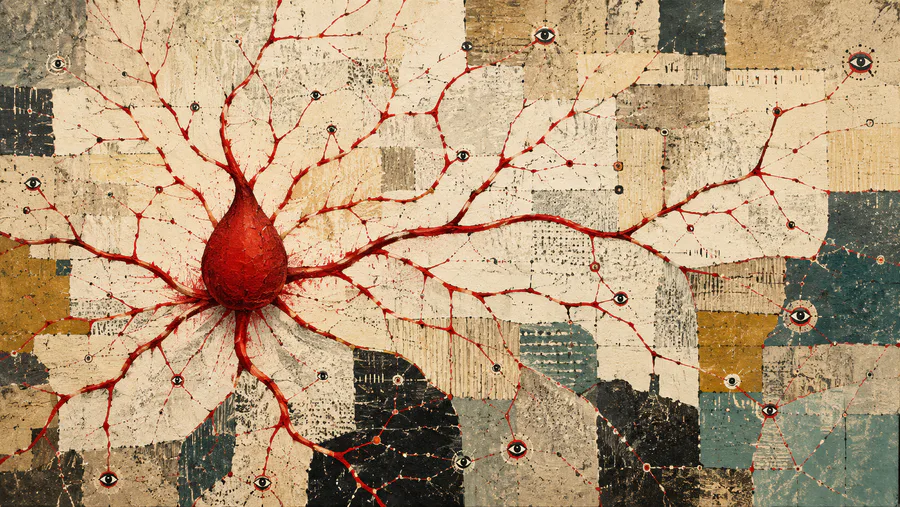

vedant misra
work
writing
about
email
writing
essays on AI, India, and what actually changes people's lives.
broke countries build different
a lesson from 1963 that india needs to relearn
may 21, 2026 · 10 min read
more
ai and human identity
what remains when intelligence is no longer uniquely ours
feb 9, 2026 · 5 min read

ai in healthcare - the indian way
rethinking healthcare for a billion people
jan 15, 2026 · 8 min read
the illusion of understanding in the age of llms
reading is not knowing
dec 26, 2025 · 6 min read